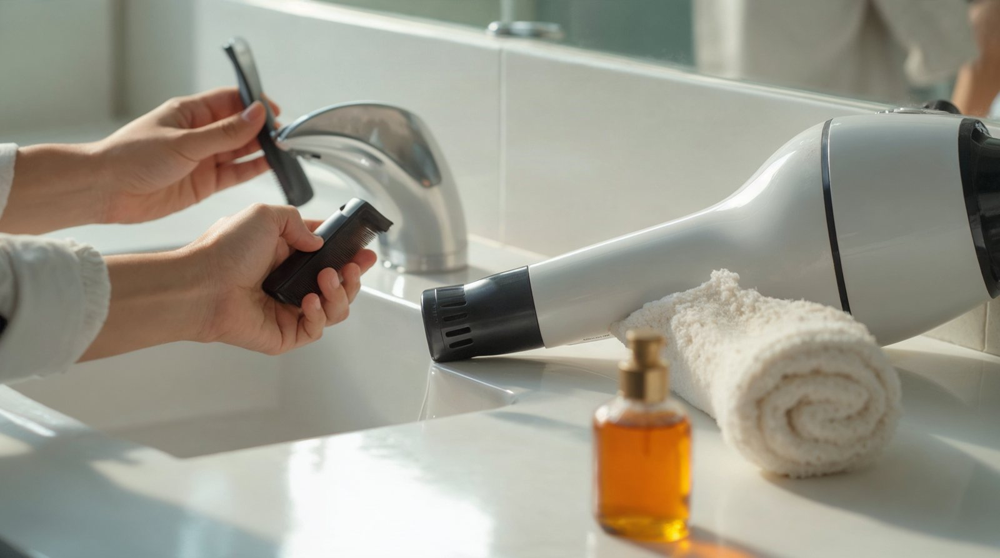
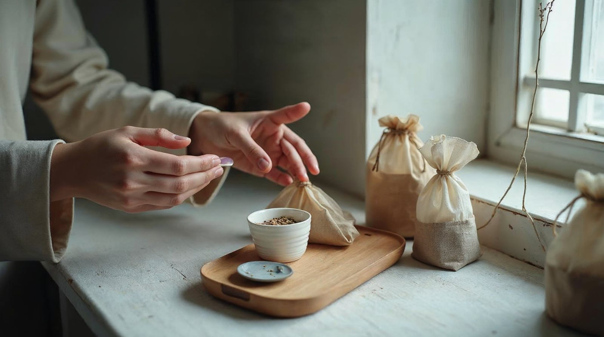

이종호 한의사 감수좋은꿈참사랑한의원 대표원장 (한의사 면허번호 19769)발행 2026-11-23 · 수정 2026-11-26
이 글의 차례
큰 스트레스나 고열, 출산, 급한 다이어트 뒤 2~4개월쯤 지나 머리카락이 한꺼번에 빠지는 경우가 있어, 빠지기 시작한 시기와 그 전 몇 달의 일, 식사와 잠을 먼저 확인합니다. 머리를 감을 때마다 배수구가 막힐 만큼 빠지면 덜컥 겁이 나지만, 돌아보면 몇 달 전 크게 아팠거나 시험, 이사, 출산처럼 큰 일을 겪은 뒤인 경우가 많습니다.
왜 이런 불편이 생길 수 있나요
- 큰 일을 겪으면 자라던 머리카락이 한꺼번에 쉬는 단계로 넘어갔다가 몇 달 뒤 빠지는 경우가 있습니다(휴지기 탈모라고 부르기도 합니다).
- 식사량을 크게 줄이면 머리카락을 만드는 데 필요한 단백질과 철분이 모자랄 수 있습니다.
- 출산 뒤에도 비슷한 시기에 머리카락이 많이 빠지는 분이 있습니다.
- 빈혈이나 갑상선 같은 몸 상태가 함께 영향을 주는 경우도 있어 확인 신호를 함께 봅니다.
먼저 이렇게 여쭙니다
- 머리카락이 많이 빠지기 시작한 것이 언제부터인가요?
- 그 2~4개월 전에 크게 아프거나 힘든 일이 있었나요?
- 최근 식사량을 크게 줄이거나 다이어트를 하셨나요?
- 빠지는 모양이 전체적으로 고른가요, 동그랗게 한 곳인가요?

일상에서 먼저 해 볼 수 있는 것
- 단백질이 들어간 식사를 끼니마다 챙기기
- 잠드는 시간을 일정하게 하기
- 머리를 세게 묶거나 뜨거운 바람으로 오래 말리지 않기
- 빠진 머리카락 수를 같은 방법으로 며칠 세어 기록해 보기
- 머리카락을 너무 자주 빗거나 세게 당기지 않기

한의원에서 함께 살필 수 있는 경우
- 큰 일 뒤 몸이 지치고 머리카락이 빠지는 경우 회복 흐름과 생활 리듬을 함께 살핍니다.
- 잠이 얕고 쉽게 피로한 경우 잠과 식사를 함께 살핍니다.
- 출산 뒤 회복 과정에서 생긴 경우 몸 전체의 회복을 함께 여쭙니다.
좋은꿈참사랑한의원에서는 빠지기 시작한 시기와 그 전의 일을 먼저 차근차근 듣고, 진맥을 기본으로 하고 필요하다고 판단될 때 설진을 더해 몸 상태를 살핀 뒤 침이나 한약 상담 등 상태에 맞는 방법을 정합니다. 혈액검사로 확인할 점이 있어 보이면 내과 같은 의료기관을 먼저 안내합니다.
이렇게 기록해 오시면 상담이 쉬워집니다
- 빠지기 시작한 날짜와 그 2~4개월 전에 있었던 일
- 하루 빠지는 양(같은 방법으로 세거나 사진으로)
- 최근 식사량과 체중 변화, 월경의 변화
- 받은 혈액검사 결과지(있다면)
이런 증상은 먼저 확인이 필요합니다
- 동그랗게 머리카락이 빠진 자리가 생기는 경우
- 눈썹이나 몸의 털도 함께 빠지는 경우
이런 신호가 있으면 한의원보다 가까운 병원이나 응급실을 먼저 찾으세요.

여쭙는 것
- 머리카락이 많이 빠지기 시작한 것이 언제부터인가요?
- 그 2~4개월 전에 크게 아프거나 힘든 일이 있었나요?
- 최근 식사량을 크게 줄이거나 다이어트를 하셨나요?
생활에서 해 볼 것
- 단백질이 들어간 식사를 끼니마다 챙기기
- 잠드는 시간을 일정하게 하기
- 머리를 세게 묶거나 뜨거운 바람으로 오래 말리지 않기
한의원에서 함께 살필 것
- 큰 일 뒤 몸이 지치고 머리카락이 빠지는 경우 회복 흐름과 생활 리듬을 함께 살핍니다.
- 잠이 얕고 쉽게 피로한 경우 잠과 식사를 함께 살핍니다.
- 출산 뒤 회복 과정에서 생긴 경우 몸 전체의 회복을 함께 여쭙니다.
먼저 확인이 필요한 신호
- 동그랗게 머리카락이 빠진 자리가 생기는 경우
- 눈썹이나 몸의 털도 함께 빠지는 경우
한눈에 보는 표
| 구분 | 핵심 |
|---|---|
| 여쭙는 것 | 머리카락이 많이 빠지기 시작한 것이 언제부터인가요? 그 2~4개월 전에 크게 아프거나 힘든 일이 있었나요? |
| 생활에서 해 볼 것 | 단백질이 들어간 식사를 끼니마다 챙기기 잠드는 시간을 일정하게 하기 |
| 한의원에서 함께 살필 것 | 큰 일 뒤 몸이 지치고 머리카락이 빠지는 경우 회복 흐름과 생활 리듬을 함께 살핍니다. 잠이 얕고 쉽게 피로한 경우 잠과 식사를 함께 살핍니다. |
| 먼저 확인이 필요한 신호 | 동그랗게 머리카락이 빠진 자리가 생기는 경우 눈썹이나 몸의 털도 함께 빠지는 경우 |
자주 묻는 질문
검사가 필요할까요?
피로나 월경 변화가 함께 있으면 빈혈이나 갑상선 상태를 혈액검사로 확인해 보는 것이 좋습니다. 필요하다고 판단되면 내과 등에서 확인하도록 안내해 드립니다.
샴푸를 바꾸면 나아지나요?
샴푸만으로 빠지는 양이 크게 달라지지는 않는 경우가 많습니다. 몸의 회복과 생활을 함께 보는 것이 좋습니다.
빠진 머리카락은 다시 나나요?
원인이 지나간 뒤 몇 달에 걸쳐 다시 자라는 경우가 많지만 사람마다 달라, 기록을 보며 함께 살핍니다.
좋은꿈참사랑한의원은 재진 때 지난번 이야기부터 이어서 여쭙니다. 진료시간과 예약은 오시는 길에서 확인하세요.
어디서 상담받을 수 있나요?
좋은꿈참사랑한의원은 서울 동작구 만양로2길 2 신성빌딩 3층·5층(서울 동작구 상도동, 7호선 상도역 3번 출구 근처)에 있습니다. 한의사 3명(이종호 대표원장, 조영기 수석진료원장, 정원영 진료원장)이 진료합니다. 진료시간은 평일 09:30~20:00(점심 13:00~14:00), 토·일·공휴일 09:30~15:00이며, 방문 전 전화로 확인을 권합니다. 예약은 네이버 예약, 카카오톡 상담, 전화 02-815-7510로 받습니다.
이 글은 일반적인 건강 정보이며 개인의 진단이나 치료를 대신하지 않습니다. 증상이 있거나 복용 중인 약이 있다면 진료를 통해 확인하세요. 치료 효과는 개인마다 다를 수 있습니다.
작성 기준: 일반적으로 알려져 있는 건강 정보를 참고해 정리했습니다(대표원장 감수). 증상 기록은 1~2주 동안 하루 1회, 비슷한 시간에 적어 오시면 지난 상태와 비교하기 쉽습니다.